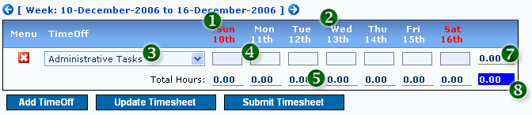
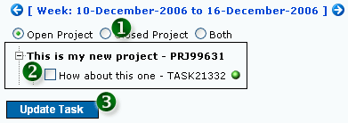
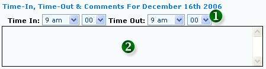
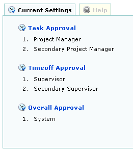

1. Creating New Timesheet
A blank timesheet page will look similar to Figure 1 below.
 Figure 1: Creating New Timesheet
Figure 1: Creating New Timesheet
- 1. CURRENT TIMESHEET WEEK
- 2. CLICK TO ADD TIMEOFF
- 3. CLICK TO IMPORT TASKS FROM PREVIOUS WEEK: Hours will not be imported
|
|
a. Adding Timeoff
Click "Add Timeoff" button to create new Timeoff Task

Figure 2: Adding Timeoff
- 1. OFF DAY: Off Day as defined in the system (can be changed in User Preference)
- 2. WORKING DAY
- 3. TIMEOFF TYPE
- 4. TOTAL HOURS: Total hours for specific day and task
- 5. TOTAL DAILY HOURS: Total hours for specific day
- 7. TOTAL TASK HOURS: Total hours for specific task
- 8. GRAND TOTAL HOURS: Total hours for the whole week
|
|
b. Adding Task
Click the "Add/Update Tasks" Tab to add / update Task in timesheet

Figure 4: Adding Updating Task
- 1. PROJECT STATUS: Open / Closed / Both
- 2. TASK SELECTION: Check to select Task
- 3. UPDATE TASK: Click to Update Task in Timesheet

- 1. SELECTED TASK: Current task selection
- 2. BILLABLE / NON BILLABLE SELECTION:
|
c. Time-In, Time-Out and Comments
Click on the hours box to enable the "Time-In, Time-Out and Comments" feature for the particular Task and it's related day. For changes in the "Time-In and Time-Out", the hours
in the Hours box will change accordingly.

Figure 5: Time-In, Time-Out and Comments
- 1. TIME-IN / TIME-OUT: Select daily time-in / time-out updates
- 2. ADD COMMENTS
|
2. Updating Timesheet
Timesheet can be updated by clicking the "Update Timesheet" button.
|
3. Submitting Timesheet
Timesheet can be submitted by clicking the "Submit Timesheet" button. The rules of "Hours / Day" and "Hours / Week" need to be satisfied first prior to submitting.
These rules can be changed for specific user by the Administrator.
|
4. Approval Rules

Figure 6: User Specific Approval Rules
Approval Rules for Specific User can be set by Administrator
- Task Approval: Approval rules for Task Specific submission. Available Options:
- Project Manager (default)
- Secondary Project Manager (default)
- Supervisor
- Secondary Supervisor
- Administrator
- System
- Timeoff Approval: Approval rules for Timeoff Specific submission. Available Options:
- Supervisor (default)
- Secondary Supervisor (default)
- Administrator
- System
- Overall Approval: Approval rules for Overall Weekly submission. Available Options:
- Supervisor
- Secondary Supervisor
- Administrator
- System (default)
|